zAIon / VIRTUAL STUDIO
Revisão para aprovação
Sem publicação. Todas as imagens abaixo são capturas reais do aplicativo em Chromium. Não são os moodboards nem imagens geradas. O navegador de testes utiliza renderização por software; estas capturas mostram o fallback Lambert, sem comprovar o resultado PBR em uma GPU física.
Relatório completo · Métricas medidas · Requisitos recebidos
Para usar a versão funcional do ZIP, execute node INICIAR-REVISAO.mjs na pasta extraída. O console informa o endereço local. Não há deploy, API paga nem envio de formulário.
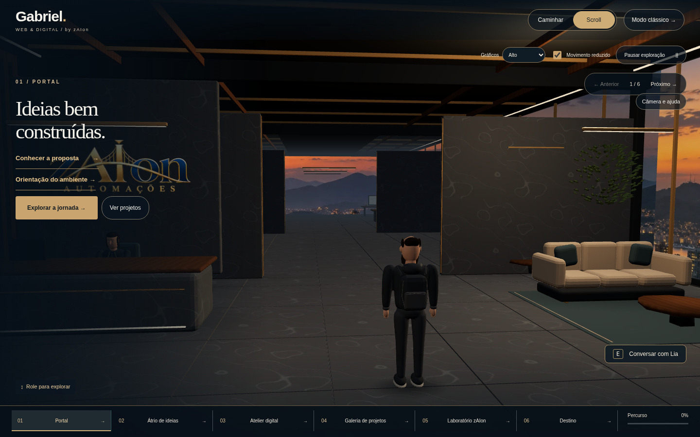
Recepção
Captura do navegador · clique para ampliar.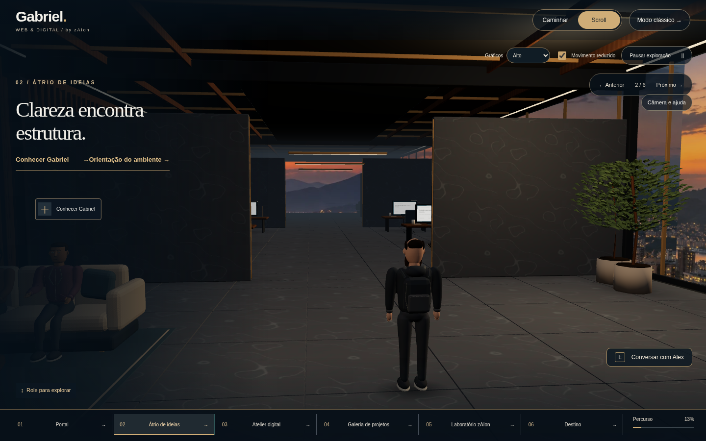
Convivência
Captura do navegador · clique para ampliar.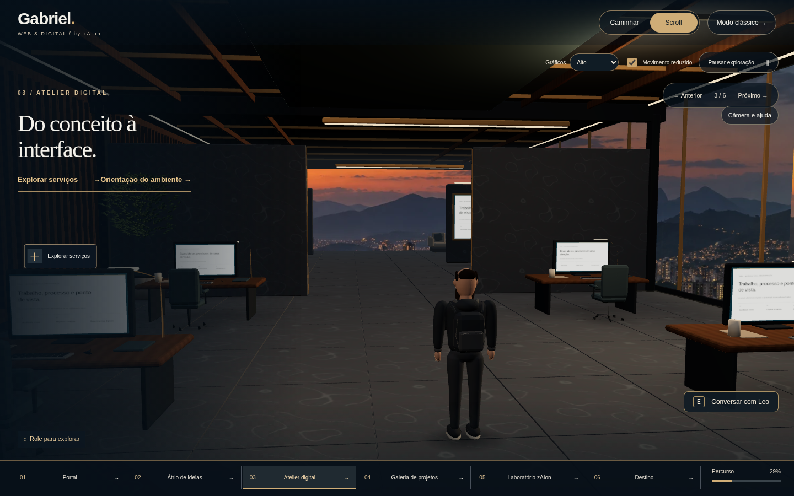
Desenvolvimento web
Captura do navegador · clique para ampliar.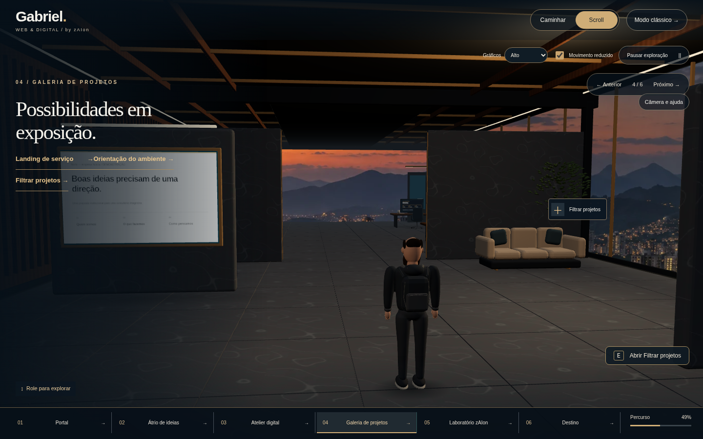
Galeria
Captura do navegador · clique para ampliar.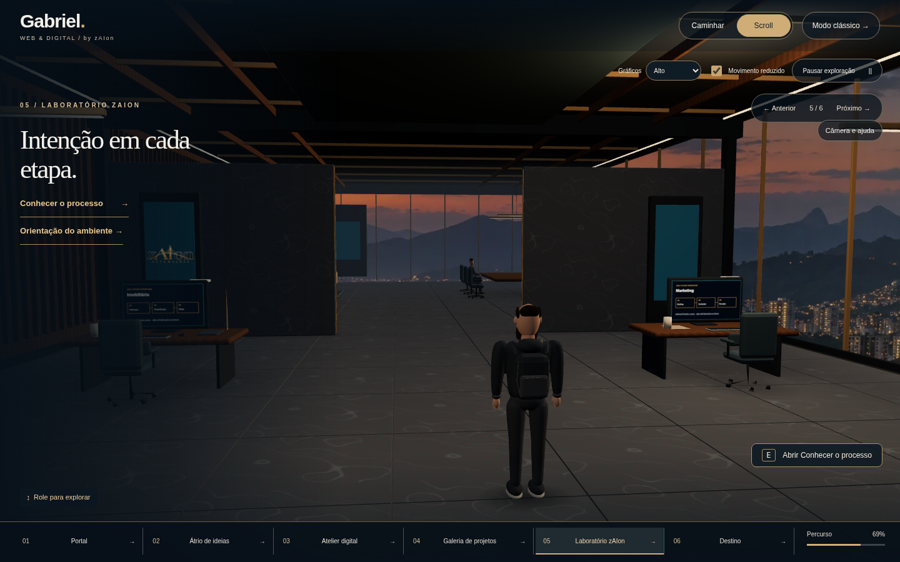
Laboratório de IA
Captura do navegador · clique para ampliar.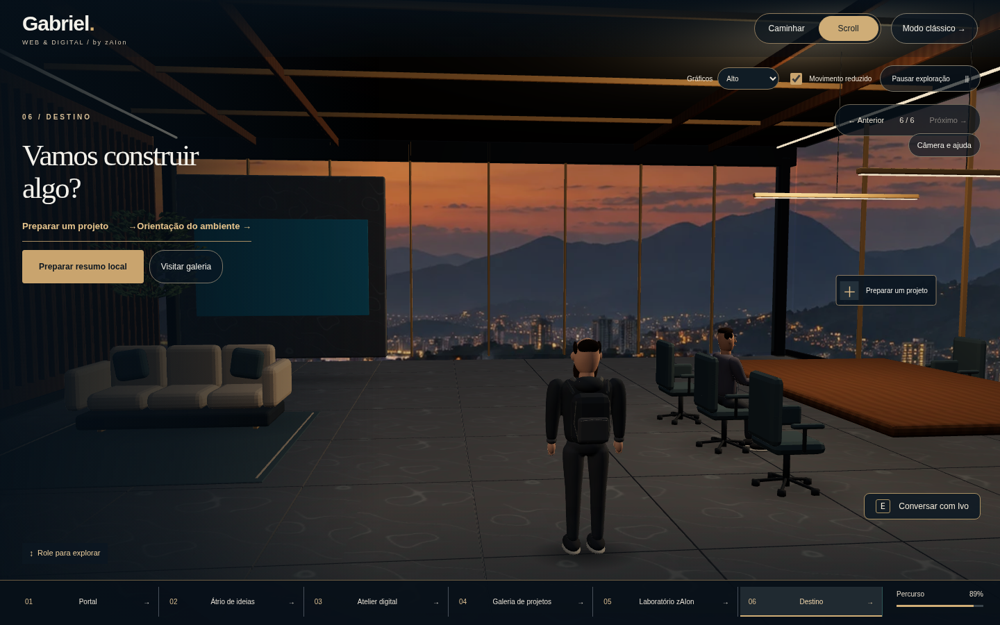
Reunião e briefing
Captura do navegador · clique para ampliar.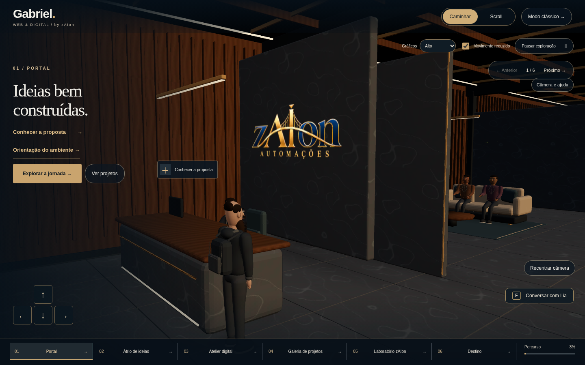
Recepção por câmera orientável
Captura do navegador · clique para ampliar.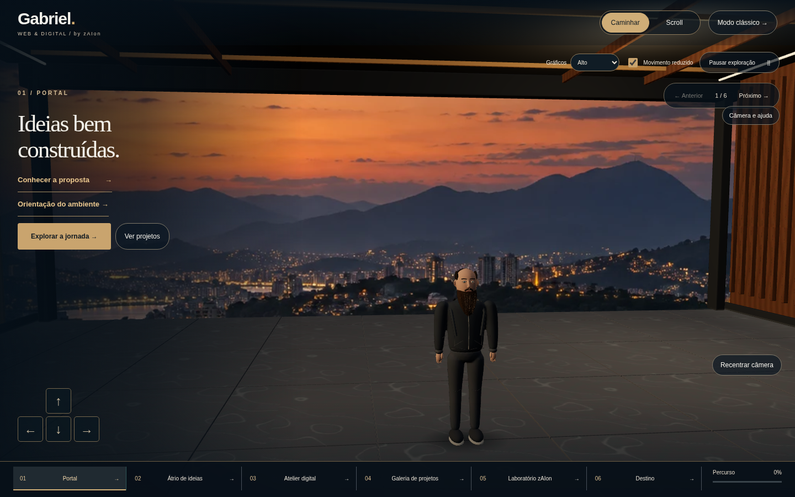
Gabriel — vista frontal na cena real
Captura do navegador · clique para ampliar.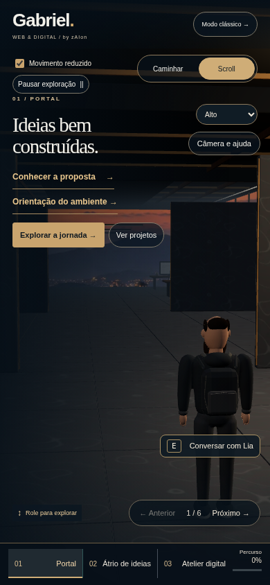
Recepção — viewport móvel
Captura do navegador · clique para ampliar.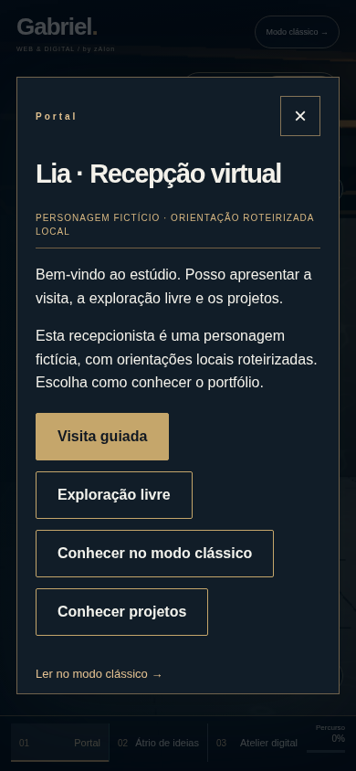
Interação por toque com a recepcionista
Captura do navegador · clique para ampliar.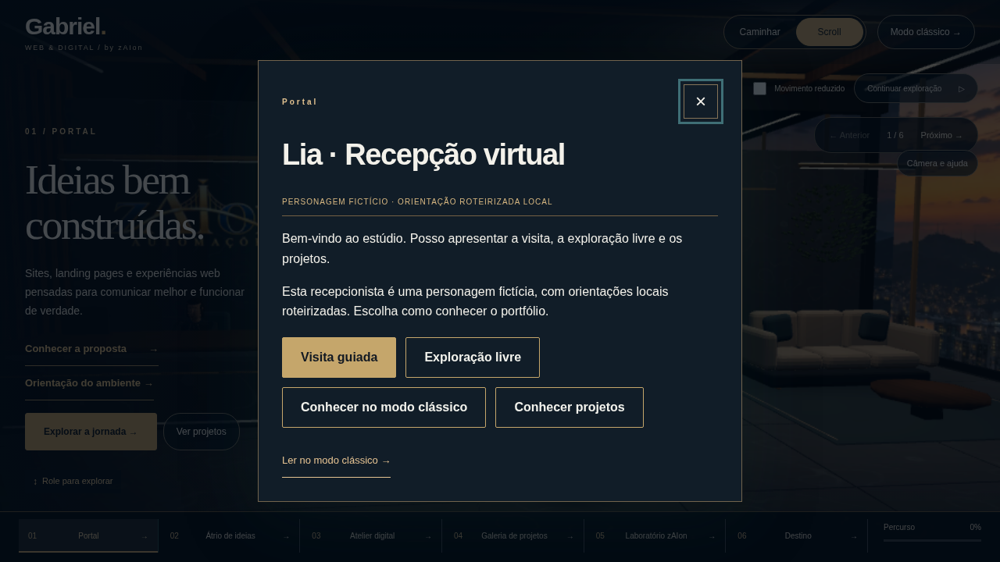
Orientação roteirizada da recepção
Captura do navegador · clique para ampliar.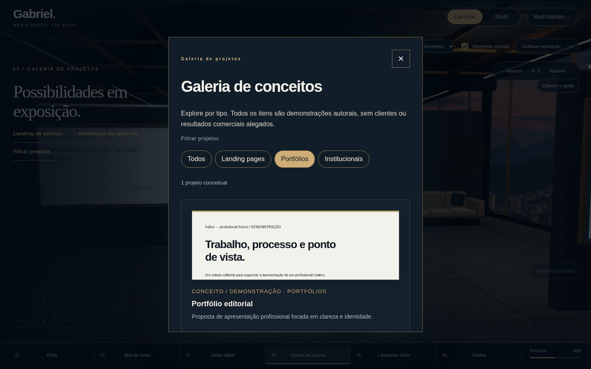
Galeria HTML com filtros e detalhes
Captura do navegador · clique para ampliar.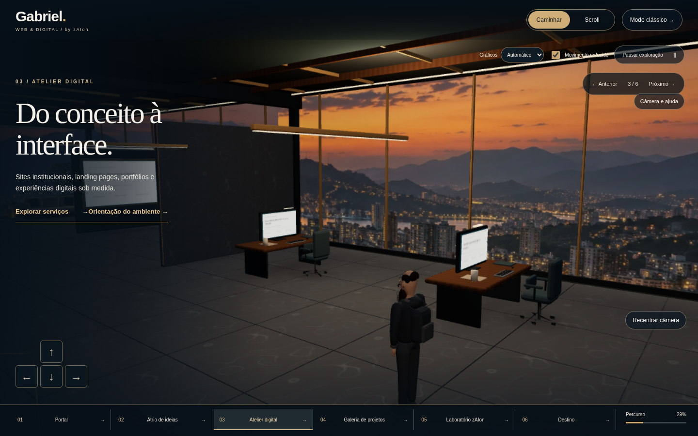
Câmera orientável no desenvolvimento
Captura do navegador · clique para ampliar.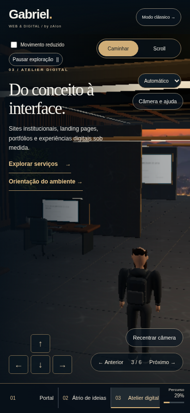
Orientação de câmera por toque
Captura do navegador · clique para ampliar.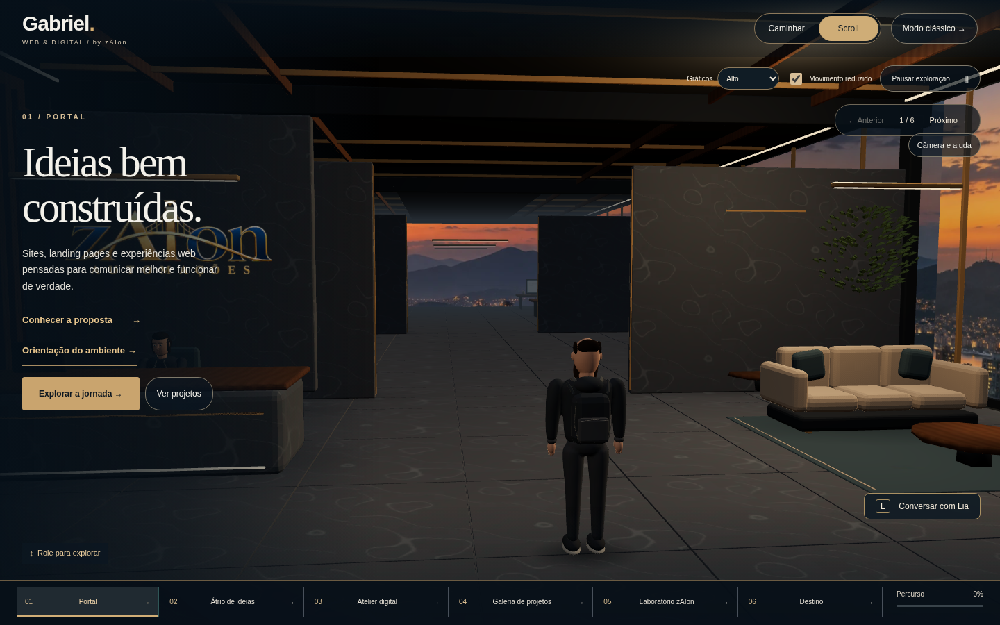
Pacote funcional servido pelo iniciador local — captura real.O protagonista permanece estilizado. Semelhança fotográfica, IK de contato e desempenho em GPU real são limites descritos no relatório. A foto original e os moodboards permanecem fora do site e desta galeria.